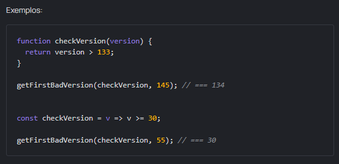

Tarefa: Bad robot! Bad!
Intro
Recentemente descobrimos que a versão mais recente do software possui um erro. Precisamos encontrar quando esse problema ocorreu o mais rápido possível.
Temos um número currentVersion e uma função checkVersion, que recebe um número de versão e retorna true se essa versão tiver um erro (false caso contrário).
Escreva uma função getFirstBadVersion que aceite um callback checkVersion e um número currentVersion e retorne a primeira versão com um erro.
- As versões são números inteiros positivos a partir do 1.
- A função checkVersion já está implementada (você pode usá-la).
